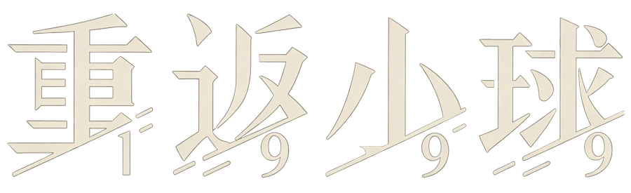

选择游玩设备
正在载入游戏资源…（首次打开约 2 MB，之后有缓存会更快）
电脑端
宽屏大视界，适配电脑
移动端
单列大按钮，适配手机
立即跳过
倍速
0.5×
1×
1.5×
2×
2.5×
3×
场地
小场
中场
大场
竖屏
阵营
2队
3队
4队
战斗逻辑区
开始对决
点一下画面重新开一局 · 小球只会被撞着走
随机模式
队伍数量
每队人数
场地大小
本局积分
查看排行榜
◀ 自选模式
开始抽签 ▶
角色积分榜
关闭
清空记录
本局积分
排行榜
知道了